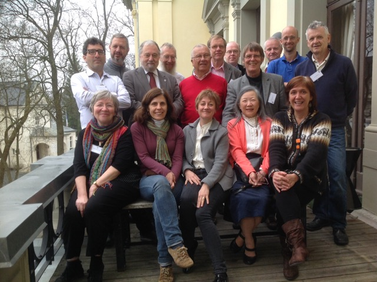

The European Mathematical Society |
| Home | About Us | Members | Activities | ERCE | Reports |
The latest news from the EMS-CDC...
ERCE is a label awarded by the EMS to centres showing an outstanding level in its area of influence in research and education, being attractor of students from other regions and countries. Indeed the education of Master and PhD students is an asset for raising the quality and the diffusion of mathematics worldwide and it has particular value in the developing world. ERCE centres are selected among those which play an important role in training students in their region particularly coming from less developed areas and countries. More information about the scheme is given here. With the success of this scheme the committee is now opening a new call for applications. The application has to be sent by e-mail to the address ems-office@helsinki.fi and the deadline for this application is February 15th, 2018. Full details are here.
The Abdus Salam International Centre for Theoretical Physics (ICTP) is looking for good, young mathematicians from developing countries to be nominated for the 2018 Ramanujan Prize. The Prize, which has been awarded annually since 2005, is funded by the Department of Science and Technology of the Government of India (DST), and is administered jointly by ICTP, the International Mathematical Union (IMU), and the DST. The Prize winner must be less than 45 years of age on 31 December of the year of the award, and have conducted outstanding research in a developing country. Researchers working in any branch of the mathematical sciences are eligible. The Prize carries a $15,000 cash award. The winner will be invited to ICTP to receive the Prize and deliver a lecture. The Prize is usually awarded to one person, but may be shared equally among recipients who have contributed to the same body of work. Check here for the list of past Prize recipients. The Selection Committee will take into account not only the scientific quality of the research, but also the background of the candidate and the environment in which the work was carried out. The Committee consists of eminent mathematicians appointed in consultation between ICTP, the IMU and the DST. The deadline for receipt of nominations for the 2018 Prize is 1 February 2018. Nominations should be made through the online system. Self-nominations are strongly discouraged. More information can be found here.
The African Continent is very diversified and the development of a career in mathematics faces different and sometimes difficult progression. The Committee for Developing Countries (CDC) of the EMS, with the support of the Simons Foundation, has opened a program of research visits to foster research opportunities for young and established researchers. The aim is to promote individual career possibilities with consequence of an improved global capacity in African academic institutions. The program is open to all areas of pure and applied mathematics and statistics and it is directed to fellows based in Africa. For all applications there are four deadlines:
The maths-reviewing service zbMATH offers free access to mathematicians and institutions in many developing countries. The exact list of which countries are eligible has just been revised, and can be found here. If you are a mathematician in one of these countries and would like access, then further information on how to obtain access can be found here. If you are a mathematician who works in a developing country that is not on the aforementioned list, you may still be able to negotiate a free trial period. You are encouraged to email the editor of zbMATH with your request:
The African Continent is very diversified and the development of a career in mathematics faces different and sometimes difficult progression. The Committee for Developing Countries (CDC) of the EMS, with the support of the Simons Foundation, opens a program of research visits to foster research opportunities for young and established researchers. The full text of the call for applications is here. Enquiries about the programme can be emailed to ems.simonsafrica@gmail.com.
We are very pleased to announce that four more institutes have been awarded the ERCE label by the EMS-CDC. So, congratulations to
We look forward to a fruitful collaboration with these centres over the coming four years. More information about these four centres, and the ERCE scheme, can be found on our ERCE page. You may also be interested to read a recent report on EMS-CDC activities for the EMS council meeting in Berlin, June 2016.
The Africa Mathematics Project (AMP) of the Simons Foundation invites applications for grants to support mathematical activities in Africa, including research of faculty at African universities, the training of graduate students, and the organization of international exchanges and conferences. Deadline for submission of proposals is August 31, 2016 at 11:59:59 PM EST. Notification of awards is planned for on or about July 1, 2017. Level and Duration of Funding: Each AMP award will receive 90,000 USD per year for up to five years, which includes 20 percent for indirect costs (overhead) to the awardee’s institution. Continued support after the first three years will be contingent on the ongoing evaluation of the project. More information here.
The London Mathematical Society (LMS) and the International Mathematical Union (IMU) Commission for Developing Countries in association with the African Mathematics Millennium Science Initiative (AMMSI) are seeking applications for grants to support mathematics and its teaching in universities in Africa. Four mentoring partnerships are to be awarded, each for a duration of two years. The project is designed to counter the mathematics ‘brain-drain’ by supporting qualified mathematics professionals in situ. Continuing professional links to a centre in the developed world, professional mentoring and opportunities for periodic research travel, will contribute to the possibility and relative attractiveness of contributing one’s mathematical expertise at home rather than moving permanently to the developed world.
The first call of the new program International Mathematical Union Breakout Graduate Fellowship will be open from the 15th April to the 15th June. Thanks to a generous donation by the winners of the Breakthrough Prizes in Mathematics –- Ian Agol, Simon Donaldson, Maxim Kontsevich, Jacob Lurie, Terence Tao and Richard Taylor –- IMU with the assistance of FIMU (Friends of the IMU) and TWAS (The World Academy of Sciences) is launching a fellowship program to support postgraduate studies, in a developing country, leading to a PhD degree in the mathematical sciences. The IMU Breakout Graduate Fellowships will offer a limited number of grants for excellent students from developing countries.
The IBNI prize for 2015 has just been announced. The winner is Mr Valaire Yatat Djeumen. Mr Djeumen is a Cameroonian doctoral student at the Université́ de Yaoundé 1. His thesis (which is on the modelling of ecological systems) is jointly directed by Jean Jules Tewa of the Ecole Nationale Supérieure Polytechnique de Yaoundé, and by Yves Dumont of CIRAD in Montpellier. The prize will allow Mr Djeumen to undertake a scientific stay with Yves Dumont in Montpellier in the course of the doctorate. Background on the prize: On February 3, 2008 Ibni Oumar Mahamat Saleh was kidnapped from his home in N'Djamena by the Chadian armed forces. He died presumably within the next few days, in detention. Ibni Oumar Mahamat Saleh was a professor and former rector of the University of N'Djamena. Former government minister, he was one of the leading figures of the democratic opposition in Chad. He was instrumental in inter-university agreements linking Chad to France and other African countries. He wanted these agreements to contribute to the quality of teacher education in his country. The French Society of Statistics (SFdS), the Society for Industrial and Applied Mathematics (SMAI) and the Mathematical Society of France (SMF) initiated in 2009 an award in his memory to continue his commitment to quality training of young African mathematicians. The Prize "Ibni Oumar Mahamat Saleh" is awarded annually. It allows a student of an institution of Central Africa or West Africa (*), in mathematical sciences, at the graduate or post-graduate level, to benefit a scientific training in a country other than his/her own. Full details on how to apply can be found here.
The African Mathematical Union has sent out its first announcement concerning the 9th Pan African Congress of Mathematicians (PACOM 2017) to be held in Rabat, Morocco from 3 to 7 July 2017. The Congress will be based on the theme "Mathematics at the heart of technological innovation and economic development of Africa". For more information visit the PACOM 2017 website (at the time of writing, this website is still under construction). Further information can also be obtained from the PACOM 2017 Organizing Committee: pacom2017@fsr.ac.ma
Zentralblatt have sent us an updated list of those developing countries that are eligible to receive free access to their review service. The list is here. Details of how to receive this free access can be found here.
The proposal of our committee to have a new ERCE call has been approved by the EC meeting of EMS at the end of November 2015. The deadline will be end of February 2016. There is more information here.
The Fifth Latin American Congress of Mathematicians (V CLAM) will take place on July 11-15, 2016 in the campus of the Universidad del Norte in the Carribean city of Barranquilla, Colombia. If you are interested in attending, or would like more information, please go to the conference website.
A call has gone out asking for nominations for the Ibni Prize. On February 3, 2008 Ibni Oumar Mahamat Saleh was kidnapped from his home in N'Djamena by the Chadian armed forces. He died presumably within the next few days, in detention. Ibni Oumar Mahamat Saleh was a professor and former rector of the University of N'Djamena. Former government minister, he was one of the leading figures of the democratic opposition in Chad. He was instrumental in inter-university agreements linking Chad to France and other African countries. He wanted these agreements to contribute to the quality of teacher education in his country. The French Society of Statistics (SFdS), the Society for Industrial and Applied Mathematics (SMAI) and the Mathematical Society of France (SMF) initiated in 2009 an award in his memory to continue his commitment to quality training of young African mathematicians. The Prize "Ibni Oumar Mahamat Saleh" is awarded annually. It allows a student of an institution of Central Africa or West Africa (*), in mathematical sciences, at the graduate or post-graduate level, to benefit a scientific training in a country other than his/her own. Full details on how to apply can be found here.
The Government of India, through the Departments of Science and Technology, Human Resource Development, Atomic Energy and many other non governmental organizations, has launched several innovative programmes such as science olympiads, KVPY etc. to spot and nurture scientific talents in the country. A compilation of some of this information is available in a brochure which can be found here.
At the EMS AGM in Oslo in April, we held a roundtable discussion on Strategies for developing mathematical research in less developed countries The discussion started with a presentation by Wandera Ogana, President of the IMU CDC. A report of the discussion can now be found here.
We've set up a new page setting out all the information on how people in developing countries can access the reviewing service zbMATH. You can see it here.
The international research community AuthorAID have announced an upcoming online course in research writing and proposal writing. Main topics covered in the course: (1) Writing research papers for publication in peer-reviewed journals, (2) Writing grant proposals to seek funding for research. Who the course is for: Researchers living and working in eligible developing countries. Early career researchers are especially encouraged to apply. The deadline for application is 20 May and more info is here.
 Amongst much other business we heard a report of ZbMATH's recent activity. Of particular relevance to this committee is the updated list of developing countries with free access to ZbMATH. Please send requests for free access to: editor[at]zentralblatt-math[dot]org.
The latest report from our chair is now available. The report will be presented to the EMS Council in Prague this month. It details the activities of the EMS-CDC over the last year.
The ALGANT consortium offers a two-year world-class integrated master course and a joint doctorate program in Algebra, Geometry and Number Theory. Both programs are now open for registration. Selected Master and Doctorate students will study at 2 consortium universities and be awarded a double degree. Partners to the consortium are: the universities of Bordeaux (France), Duisburg-Essen (Germany), Leiden (Netherlands), Milan (Italy), Concordia (Montreal, Canada), Padova (Italy), Paris-Sud (France), Regensburg (Germany), Stellenbosch (South Africa) and the Chennai Mathematical Institute (India).
The deadline for registration to the Master program is 10 February 2015.
We have just received news that the nomination period for the prestigious Prize "Ibni Oumar Mahamat Saleh" has been extended. Nominations will now be accepted up until 31st December 2014. More information on the nomination process can be found here. Some background: The Prize "Ibni Oumar Mahamat Saleh" is awarded annually. It allows a student of an institution of Central Africa or West Africa, in mathematical sciences, at the graduate or post-graduate level, to benefit from scientific training in a country other than his/her own. Full details here.
The IMU-Simons Travel Fellowship Program supports collaborative research visits of mathematicians working in the developing world to a center of excellence in any part of the world for collaborative research in mathematics. Information on the application procedure can be found here. A number of positions in mathematics are being advertised at ICTP, Trieste. Applications for short visits as well as various postdoctoral positions are now being advertised. In addition a faculty position is being advertised.
Our sister Committee for Developing Countries at the IMU has recently produced a number of interesting reports on the state of mathematics in various parts of the world. The reports can be found here.
Members of the EMS Committee for Developing Countries have been participating at the recent ICM2014 in Seoul, South Korea. Our focus was raising awareness in the mathematical community about the needs of mathematicians in developing countries. Michel Waldschmidt gave a presentation on the work of the EMS-CDC; while a poster and leaflet were created describing the work of the committee. A joint meeting was also held with members of EMS-CDC and the EMS Committee for European Solidarity.
The first Caucasian Mathematics Conference (CMC I) will be organized in Tbilisi, Georgia, on September 5 and 6, 2014, under the auspices of the European Mathematical Society and the cooperation of the Armenian, Azerbaijan, Georgian, Iranian, Russian and Turkish Mathematical Societies. The scope of the Caucasian Mathematical Conference (CMC) is to bring together mathematicians from Caucasian and neighbouring countries annually in one of these countries. The CMC is partially supported by the EMS and is welcoming mathematicians from all over the world. For more information, see the announcement by the EMS, as well as the home page of the conference.
The EMS-CDC annual general meeting was held in Berlin at the end of April 2014. You can read individual reports from our members on the reports page. The same page also contains a report of the round table discussion held at the AGM on the subject How to coordinate efforts for mathematics in developing countries?
Zentralblatt have sent us a list of those developing countries that are eligible to receive free access to their review service. The list is here. Details of how to receive this free access can be found on this poster.
The recent activities of the EMS-CDC are summarised in the latest report by the chair, Michel Waldschmidt, for the Executive Council of the EMS.
Nominations are now open for the 2014 Ramanujan Prize. The Prize winner must be less than 45 years of age on 31 December of the year of the award, and have conducted outstanding research in a developing country. Researchers working in any branch of the mathematical sciences are eligible. The Prize carries a $15,000 cash award. The winner will be invited to the ICTP to receive the Prize and deliver a lecture. The Prize is usually awarded to one person, but may be shared equally among recipients who have contributed to the same body of work. More details can be found here.
A poster is now available for the forthcoming CIMPA school Methodes algorithmiques et applications en géometrie algebrique réele et en theorie des nombres from June 16th to 29th, 2014 at AIMS-Senegal in Mbour (Senegal). To apply: For the person not resident in Senegal, register on the CIMPA website. For persons residing in Senegal, please contact one of the local organisers:
The International Council for Industrial and Applied Mathematics (ICIAM) has adopted the policy that in non-Congress years it will give support to existing conferences (typically to three conferences per year), with the support used to fund a number of ICIAM Fellowships for participants from developing countries and regions. Full details on how these fellowships will be distributed can be found on page 6 of this document.
A number of reports have been uploaded recently to our Reports page. There is a
The next International Congress of Mathematicians will take place in Seoul, Korea, from Wednesday August 13, through Thursday August 21, 2014. 1,000 mathematicians from developing countries will be invited to Korea during ICM 2014 under the ICM 2014 signature travel grant program, called NANUM 2014. Travel grants awarded will be in the range of approximately USD1500 -USD2500 per person. The first deadline for NANUM applications has passed. However, by popular demand, the submission site will be re-opened on Oct. 16, 2013 and will remain open until Oct. 31, 2013. We hope that this grace period may enable the people who missed the deadline to submit their applications. To submit an application, or to find out me, visit the NANUM 2014 homepage.
The latest newsletter of the International Mathematical Union has a number of interesting announcements, of which we mention two: Establishment of AMMSI regional office in North AfricaThe African Mathematics Millennium Science Initiative (AMMSI) is a distributed network of mathematics research, training and promotion in Africa. Initially the network operated only in Sub-Saharan Africa but, in August 2013, it was extended to North Africa. By joining AMMSI, North Africa will now benefit from a number of activities and projects which include: (a) Annual postgraduate scholarships, funded by IMU/CDC (b) MARM, a project which promotes mentorship and linkages and is implemented in collaboration with IMU and the London Mathematical Society (LMS) (c) Conference grants to enable postgraduate students attend conferences in Africa, funded by LMS. Envisaged future activities include visiting and postdoctoral fellowships, research funding, and support for organization of scientific meetings. TWAS: Free access to mathematical literature for developing countriesTWAS, the World Academy of Sciences for the advancement of science in developing countriesoffers access to a lot of scientific resources (including mathematics), which are either 1. "Open Access", 2. freely accessible for developing countries, or 3. accessible at reduced price for developing countries. The special access to scientific literature for developing countries is through research4life.org, which consists of the four networks HINARI, AGORA, OARE and ARDI. The ARDI network is the most relevant for mathematicians. On their website one can click in the left column on "Journals" and find the list of journals concerned by this program. These journals are either freely accessible or accessible at reduced price to the scientists in approved countries. For researchers who cannot easily download material, the Abdus Salam International Center for Theoretical Physics (ICTP) offers to send articles in mathematics and physics as email attachments. This is offered through the electronic Journals Delivery Service (eJDS) which requires registration and is cost-free.
The Organizing Committee of the International Congress of Mathematicians 2014 is inviting 1000 mathematicians in developing countries to Korea to participate in ICM 2014. This scheme is known as NANUM 2014 and more information can be found by following the link. Note that the official deadline for applications has passed! However it is still possible for people to apply - in particular the organisers of this scheme are committed to sending at least 100 women from developing countries to ICM 2014. Any interested women can contact NANUM 2014 direct, or communicate with members of the EMS-CDC.
In July, EMS-CDC associate member Andreas Griewank spoke at the 8th Pan African Congress of Mathematicians in Abuja, Nigeria. Andreas was representing several organisations including the German Mathematical Society and the EMS-CDC. You can read Andreas' report from the conference, as well as the text of the speech he gave.
We are very pleased to receive news of the first PhD student in mathematics in Cambodia.
Expressions of Interest in the ERCE programme are now requested. Each interested institute is asked to send us a brief description of its activities, and its suitability, together with a covering letter and supporting material. The preliminary deadline for application or expression of interest is 28th February 2014. Further information can be found here.
Springer Verlag has launched an initiative called Springer Book Archives where each author of a book published by Springer is requested to give his or her consent for the book to be included in this database. The forms to be filled include the following option: You will receive royalties, or can choose to waive them in support of charitable organizations such as INASP or Research4Life, that help provide the developing world with access to scientific research. We invite all authors who wish to do so to send a message to Springer requesting that Springer support the European Mathematical Society and its Committee for Developing Countries. At present the only regular income for the EMS-CDC is via reviewers' donations of their honoraria through Zentralblatt. Support through the Springer scheme would greatly aid the committee's ongoing work facilitating access to mathematical education and knowledge in the developing world.
A request for support using this scheme has appeared in a recent EMS newsletter.
|